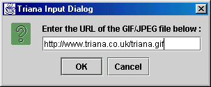

Output Types : TrianaPixelMap
Date : 22 August 2000
The URLImage unit imports a GIF or a JPEG file into Triana from an internet http address. To load a GIF file, control double-click the unit's icon which brings up an input dialog which allows you to type in the name of the http GIF file e.g.
